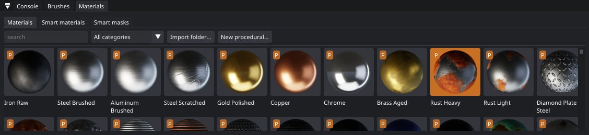
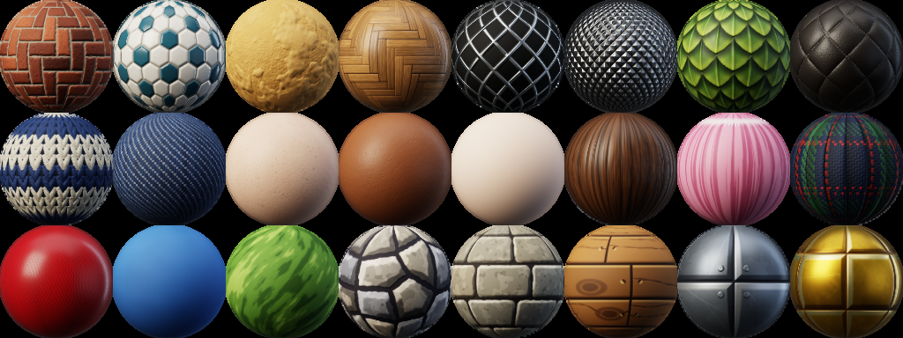
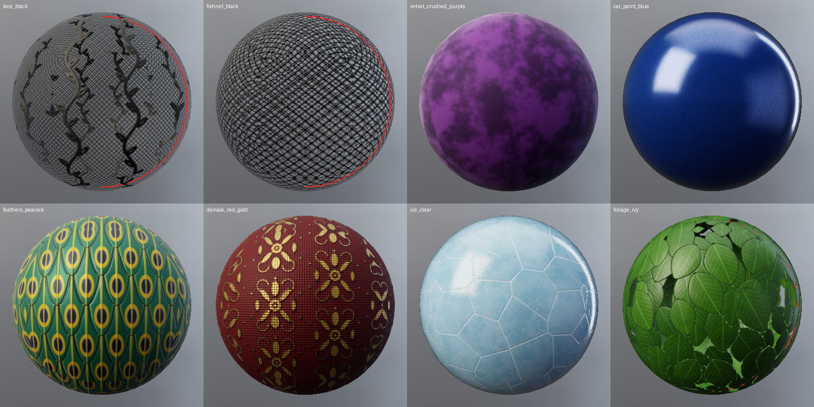
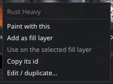
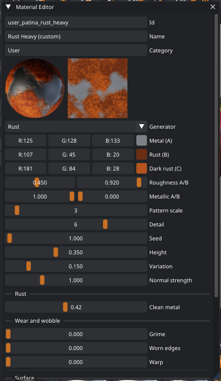

Materials
A material is a complete surface: color, roughness, metallic, height (bumps) and emission, all at once. Patina paints materials. You don't paint each map on its own.

The Patina default library
Patina ships with 270 materials. All of them are made by Patina's own procedural generators, so they tile seamlessly
at any resolution and carry no third-party licenses. Their ids all start with patina_
(for example patina_rust_heavy), so they never clash with your own materials.
| Category | Examples |
|---|---|
| Metal | iron, brushed steel and aluminum, scratched steel, gold, copper, chrome, brass, rust, diamond plate, hammered copper and steel, corrugated (galvanized / rusty), perforated, cast iron, anodized titanium, gunmetal, bronze verdigris, tarnished silver, galvanized spangle, expanded metal, chain-link fence, woven wire mesh, knurled steel and aluminum, scale armor, heat-tinted steel, verdigris crust, chainmail (steel, rusty), damascus steel (random, ladder) |
| Paint | chipped paint (red, yellow, green), peeling white, powder coat, car paint (blue, red, pearl), camouflage (woodland, desert, urban), crazed glaze, alligatored white paint, craquelure varnish |
| Stone | concrete, plaster, granite, cobblestone, bricks (red, old, running bond), brick pavers (herringbone, basket weave), concrete blocks, tiles (white, checker), hexagonal tiles (white, rosette, terracotta), marble (white, nero), terrazzo, slate, sandstone, stucco (knockdown, Mediterranean, skip trowel), grimy bricks, flagstone paths (mortar, grassy), sandstone layers, red canyon rock, stained glass, leaded diamond panes, mosaics (pool, penny tiles, Roman tesserae), ice (clear, frosted), jade |
| Ground | dirt, dust, sand (desert, beach), asphalt (fresh, cracked), moss, gravel, snow, soot, oily grime, cracked mud, lava, river pebbles, flat beach stones |
| Wood | oak (and varnished oak), walnut, pine, cherry, ebony, oak and birch bark, wicker, herringbone and basket parquet, floorboards (pine, weathered gray) |
| Fabric | leather (brown, black), quilted leather, chesterfield, puffer-jacket nylon, denim (plain weave, indigo and black twill), gabardine, linen, basket weave, canvas, wool, velvet (red, black, crushed purple), corduroy, devoré, knits (cream, ribbed stripes, seed stitch), sequins (gold, silver), pink glitter, lace (white, black, ivory), fishnet, tulle, sports mesh, fishing net, chiffon (white, black), fur (brown, long white, sleek black, pink faux fur), rope (manila, braided), a coiled cable |
| Patterns | prints and woven patterns for clothes and props: Breton stripes, navy pinstripe, chevron, regimental stripes, worn hazard stripes, wavy stripes, gingham (red, blue), buffalo check, houndstooth, argyle, windowpane check, polka dots (navy, red), comic halftone, leopard, cheetah, zebra, tiger, giraffe and cow prints, damask (red and gold, navy and silver), fleur-de-lis wallpaper |
| Paper | ruled notebook paper, graph paper, kraft card, old parchment |
| Organic | reptile scales, fish, dragon and snake scales, feathers (brown, hawk, peacock), autumn leaves, a forest floor, a leaf card, ivy |
| Character | skin (fair, light, medium, brown, deep: pores, fine creases, redness and freckles), stylized skin (anime, toon, hand-painted), hair (black, brown, blonde, ginger, anime pink and navy with a highlight ring), silk satin (red, black, ivory), pleated school-skirt plaid, red tartan, navy uniform wool, hair cards (blonde, brown, black, anime pink) |
| Stylized | toon cloth (blue, red, white), cel bands, hand-painted grass and leather, hand-painted cobbles, stone and dungeon walls, planks and crate wood, steel plates, gold trim and dark iron, crosshatching (ink, sepia pencil) |
| Plastic, Sci-Fi, Emissive, Basic | glossy and rough plastics, rubber and rubber tread, rubber grips (dots, checkering), rubber studs, carbon fiber, candle wax, frosted and green glass, piano lacquer, nail polish, hull panels with rivets, honeycomb armor, circuit boards (green, glowing blue), glowing grids, flat colors |

Patina renders physically based materials, so the Character and Stylized sets get their look from the textures themselves: clean colors, soft or hard-edged tone steps, light and shadow painted into the base color, and little or no relief. Hair runs along the V direction: paint it with UV projection on hair cards, or turn the material until the strands follow the hair. For a stylized finish on any of them, add the Stylized edge highlights smart material on top.
Opacity, sheen, clearcoat and subsurface
Besides color, roughness, metallic, height and glow, a material has four more properties (Patina 0.26):
| Property | What it is for |
|---|---|
| Opacity | 1 is solid; lower lets what is behind show through. Lace, fishnet, leaves and hair cards cut holes with it, chiffon and glass are partly see-through. |
| Sheen | A soft light at grazing angles, the way velvet, satin, fur and peach-skin catch the light. |
| Clearcoat | A smooth varnish over the surface: car paint, lacquered wood, nail polish, polished stone. It follows the shape, not the bumps under it. |
| Subsurface | Light that goes into the material and comes out softer and warmer: skin, wax, leaves, jade, marble. |
The skin, satin, velvet, car paint, marble and hair materials of the library have them now, and many of the new materials use them. You paint them like the other properties: a brush paints them where its material has them, a fill layer brings them with its material, and every layer has an Opacity, Sheen, Clearcoat and Subsurface channel (see Layers). The base material below all layers has them too. The 3D view shows them in the Material view, and the view list has a view of each. Exports write their maps only when the texture set uses them (see Exporting), and Blender gets them through the live link.
Cut out holes. Generators with holes (net, lace, leaves, hair cards, velvet's devoré, perforated metal, grilles, chainmail) have a Cut out holes tick box in the editor's Surface section: on, the holes are see-through; off, they show color C. The library's lace, nets, leaf cards, ivy and hair cards have it on.

Use the search field to search by name, category, description or tag (try weathered, floor or hard surface). Click a material to paint with it. Right-click it to paint with it, add it as a fill layer, or duplicate it into the editor. Drag it onto a fill layer to give that layer the material, between layers for a new fill layer there, or onto the model for a new fill layer above the selected one (see Drag and drop). The panel's other tabs hold the Smart materials and the Smart masks, which drag into the stack the same way.
The two buttons under the search field show the materials as tiles or as a list. The list has a small picture, the name, and the category and library of each one, so you can read long names and scan more of them at once. In the tile view, the Size slider sets how big the pictures are, and so does Ctrl+mouse wheel over them. The tiles always fit the panel's width. Long names are cut with "...", and the tooltip shows them whole. The Smart materials tab uses the same view, and Patina remembers it.

Material settings
When you paint, the material is projected onto the model. Properties › Paint material (and the same block in a fill layer's settings) controls how:
| Setting | Meaning |
|---|---|
| Projection | Tri-planar (the default) projects from three directions in object space, so it is seamless and ignores UVs. UV follows the UVs, which suits labels or anything that must follow the layout. Screen projects the image from the camera, like a decal or a stencil. |
| Scale / Rotation | The pattern size and its angle. |
| Tint | Multiplies the color. One rust can become many. |
| Rough scale / offset | Makes the material glossier or duller. |
| Height scale, Normal strength | How strong the bumps are. Set 0 to paint color without relief. |
Your own materials
Import a scanned material
Use File › Import Material Folder…, or drop a folder onto the window. Patina recognizes the usual file names from
ambientCG, Poly Haven, Quixel and Substance exports (*_Color, *_BaseColor, *_Roughness,
*_Metalness, *_NormalGL / *_NormalDX, *_Displacement, *_AO,
*_Emission…). The material is copied into your library, so the original folder can be deleted. The status bar
says how many maps were found, and the Console lists which file each channel came from.
Materials from Substance
Textures exported from Substance 3D Designer, Painter or Sampler, and materials downloaded from Substance 3D Assets as images, import directly, whichever export preset was used:
| What is in the folder | What Patina does |
|---|---|
| Separate maps (Document channels, PBR Metallic Roughness) | Each file feeds its channel. |
*_OcclusionRoughnessMetallic (Unreal preset), *_ORM, *_ARM | Splits the packed file: green is roughness, blue is metallic, red is ambient occlusion. |
*_metallicRoughness (glTF) | Green is roughness, blue is metallic. |
*_MaskMap (Unity HDRP), *_MetallicSmoothness (Unity URP / Standard) | Red is metallic, the alpha channel is smoothness (turned into roughness), the mask map's green is occlusion. |
*_BaseMap, *_AlbedoTransparency | Base color. |
Several texture sets in one folder (Robot_Body_BaseColor.png, Robot_Head_BaseColor.png…) | One material per texture set, named after it (Robot - Body, Robot - Head). |
| EXR, HDR and 16-bit PNG maps | Read at full precision. A height map in scene units (an EXR displacement) is fitted into Patina's height range, and linear EXR color is converted to sRGB. |
Normal maps: a name that says OpenGL, DirectX, GL or DX decides the
convention. A plain *_Normal next to an OcclusionRoughnessMetallic map comes from Substance's Unreal preset, so
it is read as DirectX. Anything else is read as OpenGL. If the bumps look like dents, right-click the material ›
Normal map is DirectX.
.sbsar files can't be read. An .sbsar is a compiled Substance Designer graph, and only Adobe's
Substance engine can render one. Open it in Substance Designer, Sampler or Player, export its outputs as images, and import
that folder. The same goes for Painter's own files (.spsm smart materials, .spmsk smart masks,
.spp projects): export the textures, or rebuild the stack with Patina's
smart materials. Patina says so when you drop one of those files.
Images and decals
Drop a single image onto the viewport and it becomes a color-only material with Screen projection. That makes it a stencil: aim the view, then paint the logo or photo onto the model. Drop it onto the Brushes panel instead and it becomes a brush tip.
The material editor
New procedural…, or Edit / duplicate… on any library material, opens the editor. Pick a generator (there are 74, grouped by kind, from rust and wood to diamond plate, sci-fi panels, skin, hand-painted stone, prints and stained glass), set its colors and values, and watch the live sphere and tile at the top of the window update. Save to library stores it under your user folder.

Each generator's colors and settings are named for what they do: Brick, Second brick and
Mortar for bricks, then Joint width, Bond, Wear and Length : height. A color the
generator doesn't use is hidden. A setting with a choice of styles (a brick bond, a stripe style, an animal) is a
drop-down. Where 0 stands for a default, the slider says default and the value it uses. Claude reads the same
descriptions with list_generators.
Wear and wobble
Three settings work with every generator, at the foot of the editor:
| Setting | Does |
|---|---|
| Grime, Grime color | Dirt settles in the low parts of the pattern: the grout, the mortar, the gaps between planks, cracks and grooves. They also get rougher, and a thin film covers the rest. |
| Worn edges, Edge color | The raised edges of the pattern wear to the edge color and get a little smoother: chipped brick arrises, polished tread, rubbed-through paint. |
| Warp, Warp size | Wobbles the whole pattern: wavy stripes, bricks laid by hand, hand-drawn checks. |
All three keep the material seamless. They work from the generator's own height, so a pattern with no relief (a flat print) has no grooves to fill and no edges to wear.
The generators added in 0.24:
| Generator | Settings |
|---|---|
| Stripes | stripe width · style: plain, pinstripe, chevron, wavy, three colors · direction: across, along, diagonal · woven (0 a smooth print, 1 woven threads) |
| Checks | style: checkerboard, gingham, houndstooth, argyle, windowpane · line width · woven · argyle diamond height |
| Dots | dot size · layout: grid, staggered, scattered, halftone · raised (0 printed, 1 domed studs) · woven |
| Animal print | animal: leopard, cheetah, zebra, tiger, giraffe, cow · fur (0 a smooth print, 1 short fur) · mark size |
| Cracked earth | crack width · finer cracks · curled edges · glowing cracks (the Emissive color, for lava) |
| Flagstones | joint width · uneven slabs · riven layers · tufts in the joints |
| Pebbles | gap · size variation · flat stones · gravel between |
| Rock layers | folding · erosion (hard layers stand out) · cracks · sand grain |
| Crackle | crack width · style: crazed glaze, alligator paint, craquelure · finer cracks · crack depth |
| Chainmail | wire · ring size · lean · tarnish (color B) |
| Damascus steel | folding · pattern: random, ladder, raindrop · etch depth · contrast |
| Circuit board | trace density · chips · glowing traces (the Emissive color) · trace width |
| Stained glass | lead width · layout: random pieces, square panes, diamond panes · glow (lit from behind, in the glass's own colors) · rippled glass |
| Mosaic | grout width · shape: squares, penny rounds, tesserae · color patches · bevel |
| Sequins and glitter | sequin size · tilt · kind: sequins or glitter · center holes |
| Paper | crumple · lines: none, ruled, squared, dot grid · fibers · age stains |
The generators added in 0.26:
| Generator | Settings |
|---|---|
| Fur | hair length · clumping · wave · lighter tips (color B). Color C shows deep between the clumps. |
| Feathers | length : width · barbs · markings: none, bars, dark tips, eyes (peacock) · ruffle |
| Leaves | style: fallen leaves, one leaf (a card), foliage · leaf width · veins · color change toward color B (autumn). Color C is the ground, or the gaps (cut out). |
| Rope | style: twisted, braided, coiled · strands · twist · fuzz. The rope runs along V: use UV mapping on a tube. |
| Damask | style: medallion, floral trellis, fleur-de-lis · ornament size · outline (color C) · woven |
| Ice | cracks · bubbles · frost · crack depth |
| Crosshatching | line width · layers (1 to 4) · contrast · wobble |
| Lace | motif size · net fineness · style: roses, vines, geometric · cord (color B). Holes cut out. |
| Net and mesh | thread width · style: fishnet, honeycomb, square mesh, knotted net · knots (color B) · stretch. Holes cut out. |
| Hair cards | strands · clumping · short strands (how much shorter they are) · lighter tips. Gaps cut out. |
| Velvet | style: plain, crushed, corduroy, devoré · pattern size · pile grain · wales (corduroy ribs). Give it sheen. |
The settings of the older generators:
| Generator | Extra x, y, z, w |
|---|---|
| bricks | joint width (0.1) · bond: 0 running, 1 stack, 2 herringbone, 3 basket weave · wear (chipped edges, pits) · brick length : height (3) |
| parquet | gap width (0.03) · layout: 0 floorboards, 1 herringbone, 2 basket · plank length : width (5) · grain contrast (1) |
| hex_tiles | grout width (0.05) · bevel (0.1) · 1 = every third tile color B (scale a multiple of 3) · 1 = raised walls, sunken cells (honeycomb) |
| scales | pointiness (0 round fish scales, 1 pointed dragon scales) · rim highlight · central keel · scale size (0.62) |
| grille | wire / strand width (0.16) · type: 0 expanded metal, 1 chain-link, 2 woven wire · strand tilt shading (1). The holes take color C. |
| quilted | stitches (0–1) · 1 = buttons at the crossings · layout: 0 diamond, 1 square, 2 channels (puffer jacket) · leather grain (0 smooth fabric, 1 leather) |
| knit | ribbing (purl columns every n) · stripes per tile (color B) · fuzz (1) · 1 = seed stitch |
| knurling | type: 0 diamond, 1 straight, 2 rubber dots, 3 square · worn crests (color B) · flat tops · groove dirt (color C, 0.5) |
| stucco | splat coverage (0.5) · trowel flattening · sand grain · orange-peel bumps |
| twill | weave: 0 2/1 twill, 1 3/1 twill (denim), 2 satin · tartan repeats per tile (colors A, B, C; 0 = warp A, weft B) · knife pleats per tile · sheen |
| skin | pores · freckles (color C) · fine creases · redness (color B) |
| hair | dark gaps between locks (color C) · highlight band (color B) · cel: 0 soft, 1 two clean tones and a zig-zag highlight ring · waves per tile |
| brush_strokes | softness (0 hard cel bands, 1 soft gradients) · direction: 0 horizontal, 1 diagonal, 2 vertical, 3 other diagonal · stroke length (3) · bristle streaks. Colors: A base, B shade, C light. |
| painted_stone | outline width (0.05) · layout: 0 cobbles, 1 wall blocks · painted chips · highlight strength (1) |
| painted_wood | grain lines per plank (3) · knots · light top-edge width (0.12) · 1 = nails |
| painted_metal | bevel width (0.08) · 1 = rivets · painted scratches · top-to-bottom gradient |
A value of 0 means the default shown in brackets. In the hand-painted generators the light comes from the top left of the texture, as in most hand-painted game art.
Gotchas
user_patina_… in the User category, and
the original stays as it was. That is deliberate: your projects keep working when Patina is updated.rust_heavy). They still open, because the old ids are mapped to the
patina_… materials automatically."normal": "directx" to
import_material_folder._ORM (red occlusion, green roughness, blue metallic) or _MaskMap, then import again.